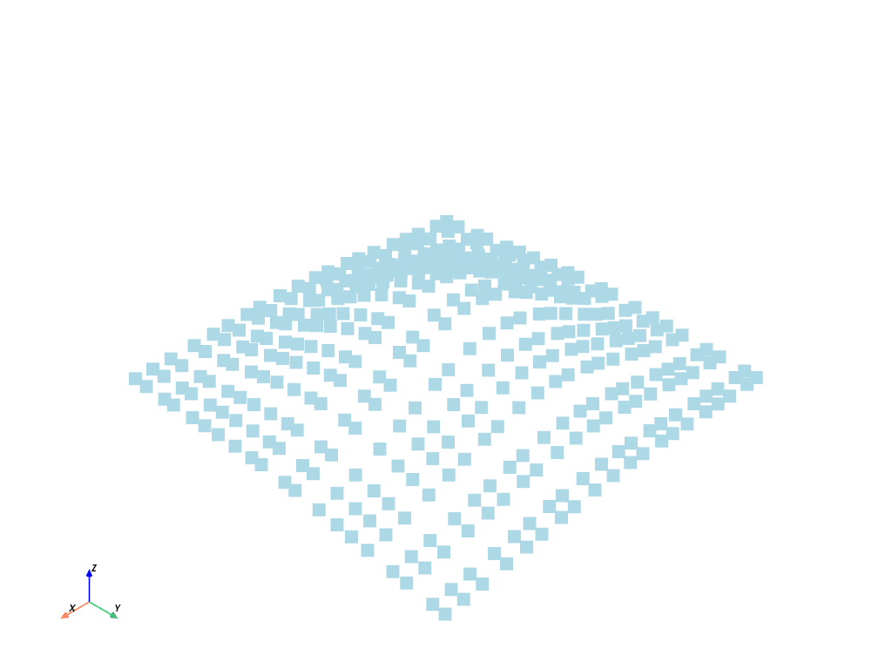
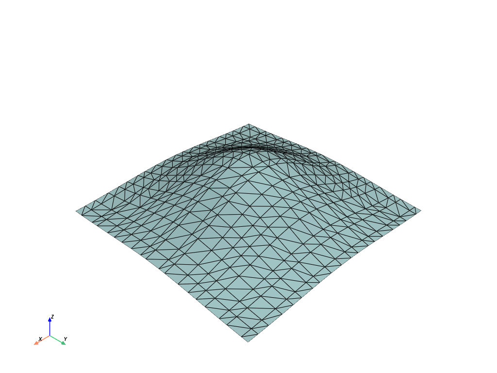
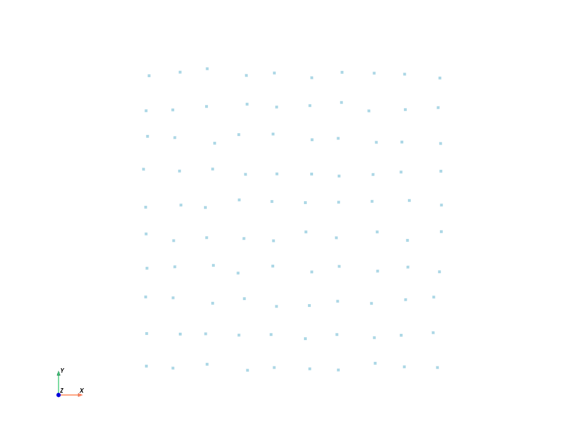
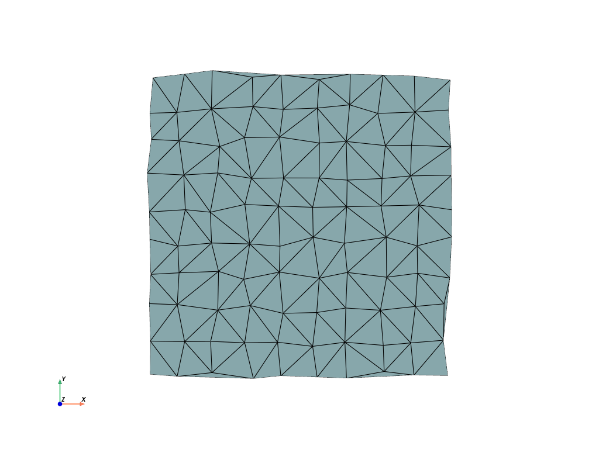
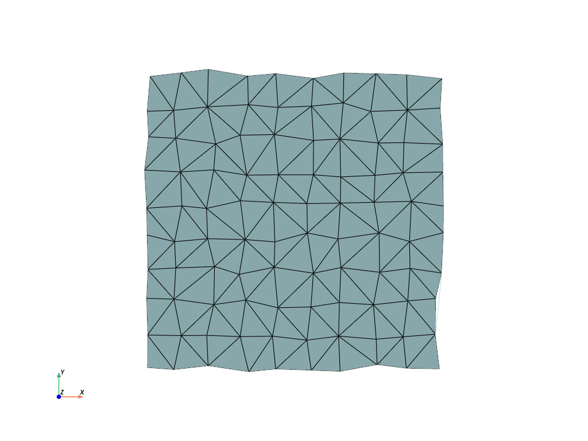

注釈
完全なサンプルコードをダウンロードしたり、Binderを使ってブラウザでこのサンプルを実行するには、 最後に進んでください 。
三角形状のサーフェスを作成する#
ドロネーの三角形分割により，点群から曲面を作成します．
注釈
PyVistaのフィルターを使って三角形分割を行います： delaunay_2d ．
import numpy as np
import pyvista as pv
単純な三角形分割#
まず，サーフェス用のポイントをいくつか作成します．
# Define a simple Gaussian surface
n = 20
x = np.linspace(-200, 200, num=n) + np.random.uniform(-5, 5, size=n)
y = np.linspace(-200, 200, num=n) + np.random.uniform(-5, 5, size=n)
xx, yy = np.meshgrid(x, y)
A, b = 100, 100
zz = A * np.exp(-0.5 * ((xx / b) ** 2.0 + (yy / b) ** 2.0))
# Get the points as a 2D NumPy array (N by 3)
points = np.c_[xx.reshape(-1), yy.reshape(-1), zz.reshape(-1)]
points[0:5, :]
array([[-203.38238475, -195.58352972, 1.86694725],
[-175.74656756, -195.58352972, 3.15245505],
[-162.75058817, -195.58352972, 3.92802452],
[-135.37762044, -195.58352972, 5.90718452],
[-112.06239147, -195.58352972, 7.88234424]])
次に，これらの点を使って，点群PyVistaデータオブジェクトを作成します．これは pyvista.PolyData オブジェクトに包含されることになります．
# simply pass the numpy points to the PolyData constructor
cloud = pv.PolyData(points)
cloud.plot(point_size=15)

点のPyVistaデータ構造ができたので，三角形分割を実行して，つまらない離散点を接続された曲面に変えることができます． pyvista.UnstructuredGridFilters.delaunay_2d() を参照してください．
help(cloud.delaunay_2d)
Help on method delaunay_2d in module pyvista.core.filters.poly_data:
delaunay_2d(tol=1e-05, alpha=0.0, offset=1.0, bound: 'bool' = False, inplace: 'bool' = False, edge_source=None, progress_bar: 'bool' = False) method of pyvista.core.pointset.PolyData instance
Apply a 2D Delaunay filter along the best fitting plane.
This filter can be used to generate a 2d surface from a set of
points on a plane. If you want to create a surface from a
point cloud, see :func:`pyvista.PolyDataFilters.reconstruct_surface`.
Parameters
----------
tol : float, default: 1e-05
Specify a tolerance to control discarding of closely
spaced points. This tolerance is specified as a fraction
of the diagonal length of the bounding box of the points.
alpha : float, default: 0.0
Specify alpha (or distance) value to control output of
this filter. For a non-zero alpha value, only edges or
triangles contained within a sphere centered at mesh
vertices will be output. Otherwise, only triangles will be
output.
offset : float, default: 1.0
Specify a multiplier to control the size of the initial,
bounding Delaunay triangulation.
bound : bool, default: False
Boolean controls whether bounding triangulation points
and associated triangles are included in the
output. These are introduced as an initial triangulation
to begin the triangulation process. This feature is nice
for debugging output.
inplace : bool, default: False
If ``True``, overwrite this mesh with the triangulated
mesh.
edge_source : pyvista.PolyData, optional
Specify the source object used to specify constrained
edges and loops. If set, and lines/polygons are defined, a
constrained triangulation is created. The lines/polygons
are assumed to reference points in the input point set
(i.e. point ids are identical in the input and
source).
progress_bar : bool, default: False
Display a progress bar to indicate progress.
Returns
-------
pyvista.PolyData
Mesh from the 2D delaunay filter.
Examples
--------
First, generate 30 points on circle and plot them.
>>> import pyvista as pv
>>> points = pv.Polygon(n_sides=30).points
>>> circle = pv.PolyData(points)
>>> circle.plot(show_edges=True, point_size=15)
Use :func:`delaunay_2d` to fill the interior of the circle.
>>> filled_circle = circle.delaunay_2d()
>>> filled_circle.plot(show_edges=True, line_width=5)
Use the ``edge_source`` parameter to create a constrained delaunay
triangulation and plot it.
>>> squar = pv.Polygon(n_sides=4, radius=8, fill=False)
>>> squar = squar.rotate_z(45, inplace=False)
>>> circ0 = pv.Polygon(center=(2, 3, 0), n_sides=30, radius=1)
>>> circ1 = pv.Polygon(center=(-2, -3, 0), n_sides=30, radius=1)
>>> comb = circ0.append_polydata(circ1, squar)
>>> tess = comb.delaunay_2d(edge_source=comb)
>>> tess.plot(cpos='xy', show_edges=True)
See :ref:`create_tri_surface_example` for more examples using this filter.
delaunay_2d フィルタを適用します．
surf = cloud.delaunay_2d()
# And plot it with edges shown
surf.plot(show_edges=True)

クリーンエッジと三角形分割#
# Create the points to triangulate
x = np.arange(10, dtype=float)
xx, yy, zz = np.meshgrid(x, x, [0])
points = np.column_stack((xx.ravel(order="F"), yy.ravel(order="F"), zz.ravel(order="F")))
# Perturb the points
points[:, 0] += np.random.rand(len(points)) * 0.3
points[:, 1] += np.random.rand(len(points)) * 0.3
# Create the point cloud mesh to triangulate from the coordinates
cloud = pv.PolyData(points)
cloud
cloud.plot(cpos="xy")

これらの点に対して三角測量を実行します
surf = cloud.delaunay_2d()
surf.plot(cpos="xy", show_edges=True)

外側のエッジの一部は拘束されておらず，三角形分割によって不要な三角形が追加されていることに注意してください．私たちは alpha パラメータでそれを緩和します．
surf = cloud.delaunay_2d(alpha=1.0)
surf.plot(cpos="xy", show_edges=True)

Total running time of the script: (0 minutes 0.983 seconds)